Lavori in marmo a Caserta
Camini, scale, pavimenti e intarsi, portali e opere di arte funeraria realizzati nel laboratorio di Macerata Campania. Filtra per tipo di lavoro o tocca una pietra per vedere dove l'abbiamo usata.
Legenda dei materiali. Dal Bianco Statuario al Portoro, dal Travertino romano all'Onice, ogni pietra ha caratteristiche proprie: tocca un campione per vedere dove l'abbiamo usata.
Nessuna tavola con questa combinazione.
-

CAMCamino in Onice e PortoroOnice, Portoro -
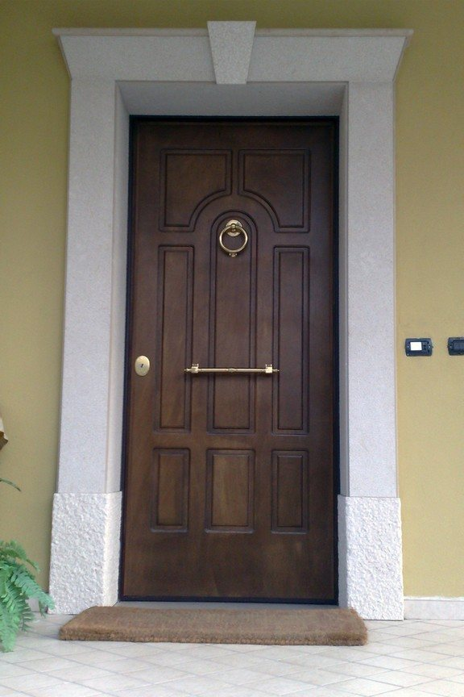
PORPortale con architrave a sbalzoTrani classico bocciardato e picconato -
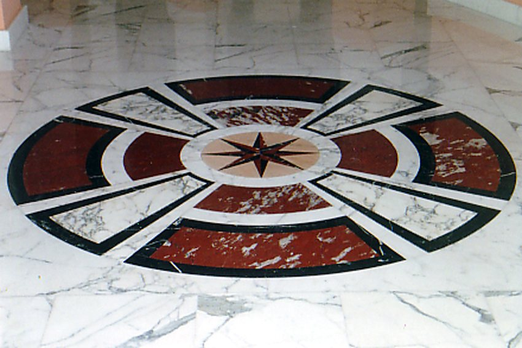
PAVRosa dei venti intarsiataMarmi policromi -
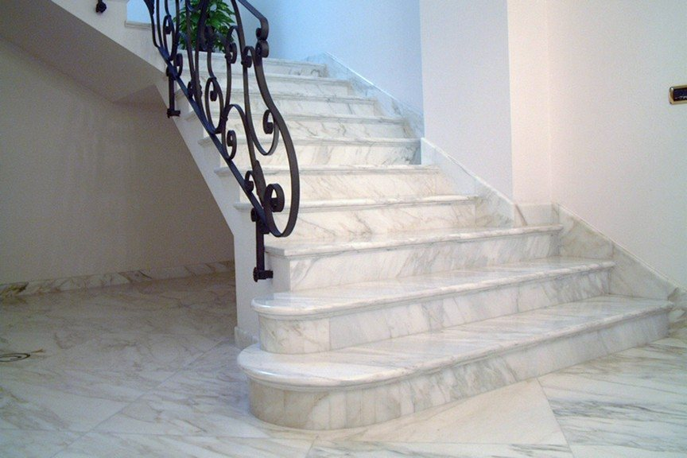
SCAScala con bordatura a corniceCalacatta macchia oro -

CAMCamino a masselloTravertino romano -
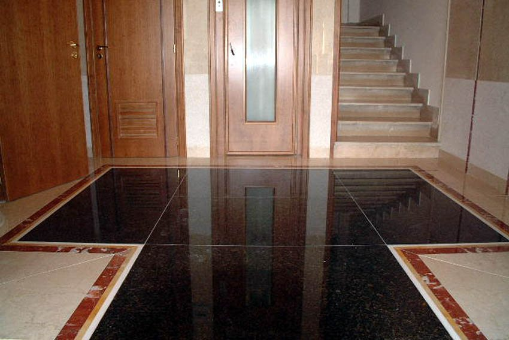
PAVPavimento con fasce intarsiateNero Africa, Rosso Francia, Giallo reale -
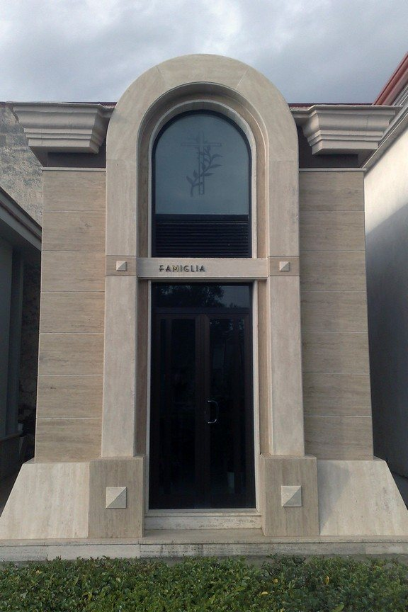
FUNCappella gentiliziaTravertino romano -
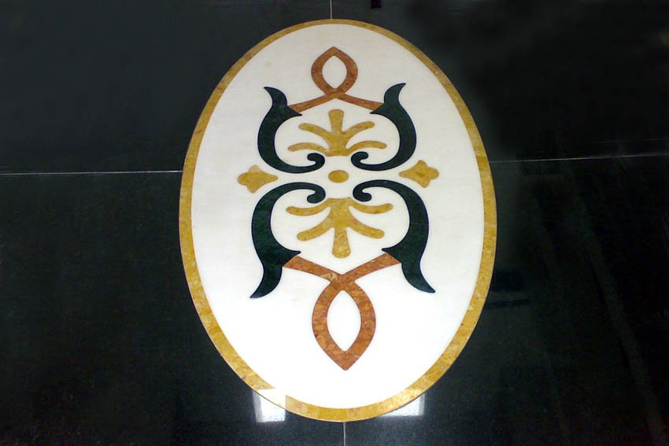
PAVRosone intarsiatoBianco Sivec, Giallo reale, Verde Guatemala, Rosso Verona -

CAMCamino con motivi a rilievoTrani -
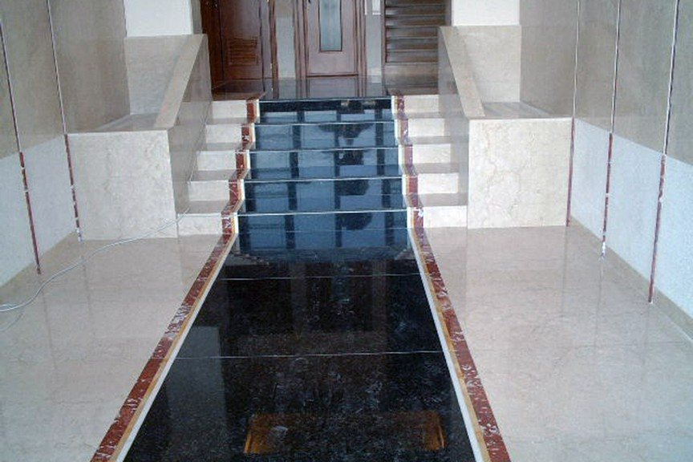
SCAScala e ingresso a fasceRosso Verona, Giallo Siena, Nero Africa -
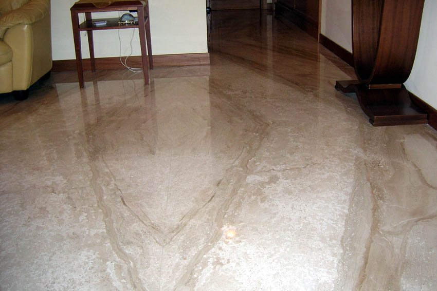
PAVPavimento a macchia apertaDaino reale -

CAMCamino, dettaglio della corniceBianco Statuario -
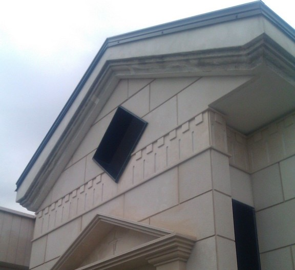
FUNCappella, il frontoneTrani classico a vari spessori -
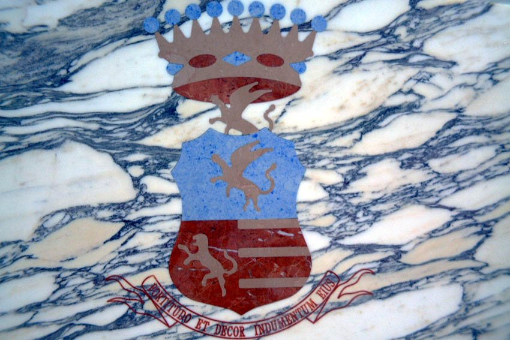
PAVStemma intarsiatoRosso Verona, Azul Bahia, Botticino -
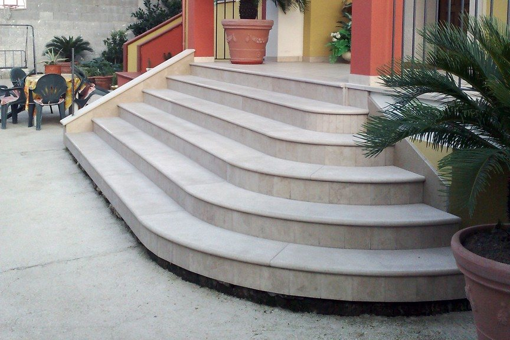
SCAScala esterna curvaTrani classico -
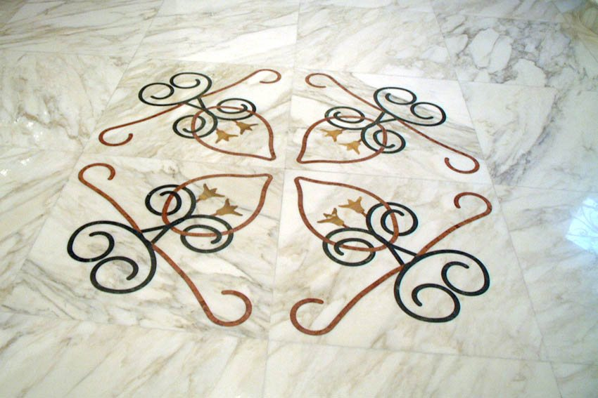
PAVPavimento con intarsioCalacatta, marmi policromi
Per tipo di lavoro
- CAMCamini in marmoRealizziamo camini in marmo, valorizzando le caratteristiche della pietra attraverso tecnologia, esperienza e cura artigianale.
- PAVPavimenti e intarsiLavoriamo pavimenti e intarsi in marmi policromi, con motivi come rosoni, rose dei venti e stemmi.
- SCAScale in marmoRealizziamo scale in marmo e granito, curando la lavorazione e le rifiniture in ogni fase.
- PORPortali in pietraRealizziamo portali in pietra, seguendo il progetto e le indicazioni del cliente con competenza artigianale.
- FUNArte funerariaCi occupiamo di arte funeraria e realizziamo cappelle gentilizie, unendo competenza tecnica e cura delle lavorazioni.
Passa in laboratorio
Per parlare del tuo progetto o conoscerci di persona, chiamaci allo 0823 693073 oppure passa in laboratorio a Macerata Campania. Ti accoglieremo con piacere.
- Telefono
- 0823 693073Cellulare 393 9235457
- Laboratorio
- Via Starzolella
81047 Macerata Campania (CE) - Orari
- Da confermare
- info@euromarmisud.it
- Fax
- 0823 776193
- Indicazioni
- Apri il percorso su Google Maps